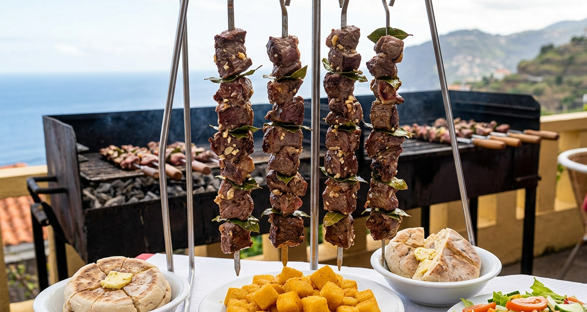

Home
Espetada Madeirense (Beef Skewers)

Description
Espetada Madeirense is a traditional dish from Madeira Island, Portugal.
It consists of large cubes of beef seasoned simply with garlic, salt, and
bay leaves, then grilled on skewers over an open flame. The result is
juicy, smoky, and full of natural flavor. It is usually served with bread
or milho frito (fried cornmeal).
Ingredients
- 800g beef (sirloin or similar cut)
- 3-4 cloves of garlic
- 2 bay leaves
- Coarse salt (to taste)
- Black pepper (optional)
- 1 tablespoon olive oil
Steps
- Cut the beef into large cubes.
- Crush the garlic and mix it with salt and olive oil.
- Season the beef with the garlic mixture, bay leaves, and pepper.
- Let it rest for at least 1 hour (or overnight for more flavor).
- Thread the meat onto skewers.
-
Grill over high heat, turning occasionally, until cooked to your liking.
- Serve hot with bread or side dishes.